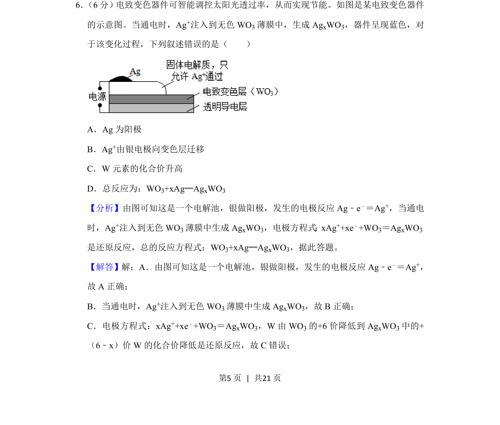
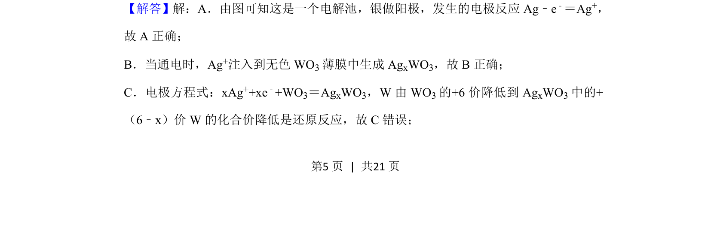
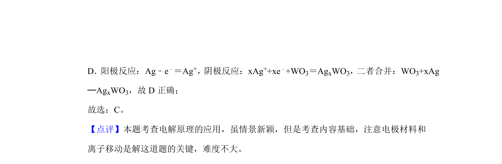

考点：电解池 阳极反应 离子迁移 化合价

该题以电致变色器件为背景，考查电解池工作原理、电极判断及化合价变化。


📄 原 PDF 第 5 页：
素材/真题/吉林/2008-2024·（吉林）化学高考真题/2020年高考化学试卷（新课标Ⅱ）（解析卷）.pdf
6． （6分）电致变色器件可智能调控太阳光透过率，从而实现节能。如图是某电致变色器件 的示意图。当通电时，Ag+注入到无色WO 3薄膜中，生成Ag xWO3，器件呈现蓝色，对 于该变化过程，下列叙述错误的是（ ） A．Ag为阳极 B．Ag+由银电极向变色层迁移 C．W元素的化合价升高 D．总反应为：WO3+xAg═AgxWO3
【分析】由图可知这是一个电解池，银做阳极，发生的电极反应Ag﹣e ﹣＝Ag+，当通电 时，Ag+注入到无色WO 3薄膜中生成Ag xWO3，电极方程式：xAg++xe﹣+WO3＝AgxWO3 是还原反应，总的反应方程式：WO3+xAg═AgxWO3，据此答题。 【解答】解：A．由图可知这是一个电解池，银做阳极，发生的电极反应Ag﹣e﹣＝Ag+， 故A正确； B．当通电时，Ag+注入到无色WO 3薄膜中生成Ag xWO3，故B正确； C．电极方程式：xAg ++xe﹣+WO3＝AgxWO3，W由WO 3的+6价降低到Ag xWO3中的+ （6﹣x）价W的化合价降低是还原反应，故C错误；